Varelager består av varer som en bedrift holder på lager for videresalg til kunder, og representerer en av de mest kritiske omløpsmidlene i balansen. Varelageret er et fysisk og regnskapsmessig lager av produkter som bedriften har kjøpt eller produsert med formål om å selge dem videre i sin ordinære virksomhet. For mange bedrifter utgjør varelageret den største enkeltposten blant omløpsmidlene og krever derfor nøyaktig verdivurdering og systematisk styring for å optimalisere arbeidskapitalen og sikre korrekt resultatregnskap.
For en helhetlig forståelse av hvordan varer flyter gjennom virksomheten og tilbake til kapital, se artikkelen Varekretsløpet.
Seksjon 1: Definisjon og Klassifikasjon
Varelager klassifiseres som kortsiktige eiendeler da varene normalt forventes å bli solgt innen ett år. Lageret er en sentral komponent i bedriftens kontantstrøm og påvirker direkte lønnsomheten gjennom kostprisberegning når varene selges.

Hovedtyper av Varelager
Handelsvarer
Handelsvarer er varer som kjøpes ferdig produsert fra leverandører og selges videre uten vesentlig bearbeiding:
- Detaljhandelsvarer: Konsumvarer solgt direkte til sluttbrukere
- Grossistlager: Varer kjøpt i store volum for videresalg til detaljister
- Importvarer: Produkter innført fra utlandet for det norske markedet
- Markedsvarer: Spesialiserte produkter for bestemte markeder eller kundegrupper
Produksjonslager
Produksjonslager omfatter varer i ulike stadier av produksjonsprosessen:
- Råvarer: Materialer som skal inngå i produksjon
- Varer under arbeid (VUA): Delvis ferdige produkter i produksjon
- Ferdigvarer: Fullførte produkter klare for salg
- Hjelpestoffer: Materialer som støtter produksjonsprosessen
Reservedeler og Vedlikeholdslager
Reservedeler og vedlikeholdslager sikrer kontinuerlig drift:
- Kritiske reservedeler: Komponenter essensielle for produksjon
- Vedlikeholdsmateriell: Forbruksvarer for vedlikehold
- Sikkerhetslager: Buffer mot leveringsavbrudd
- Sesongvarer: Produkter med sesongbasert etterspørsel
Lageregnskapsklassifikasjoner
Varekategorier i Balansen
| Kategori | Karakteristikk | Verdivurdering | Omløpshastighet |
|---|---|---|---|
| Råvarer | Produktionsmateriell | Anskaffelseskost | Middels |
| Varer under arbeid | Delvis ferdig produksjon | Akkumulerte kostnader | Lav |
| Ferdigvarer | Salgsklare produkter | Produksjonskost | Høy |
| Handelsvarer | Kjøpte varer for videresalg | Varekostnad | Variabel |
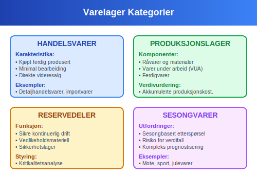
Seksjon 2: Verdivurderingsmetoder
Verdivurdering av varelager følger laveste verdi prinsippet, hvor lageret skal verdsettes til laveste verdi av anskaffelseskost eller netto realisasjonsverdi. Valg av verdivurderingsmetode har betydelige konsekvenser for både regnskapsmessig resultat og skatteberegning.
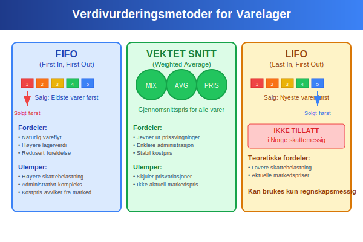
FIFO-metoden
For en mer detaljert gjennomgang av FIFO-metoden, se egen artikkel FIFO-metoden. Metoden antar at de eldste varene selges først, og lagerverdien baseres på de nyeste kostprisene.
LIFO-metoden (Last In, First Out)
LIFO-metoden antar at de nyeste varene selges først. Metoden er ikke tillatt i Norge skattemessig, men kan anvendes for regnskapsformål.
LIFO-beregning (kun regnskapsmessig):
Ved samme salg som over (400 stk):
- 250 stk til 120 kr = 30.000 kr
- 150 stk til 110 kr = 16.500 kr
- Total kostpris solgte varer: 46.500 kr
Gjenværende lager:
- 200 stk til 100 kr = 20.000 kr
- 150 stk til 110 kr = 16.500 kr
- Total lagerverdi: 36.500 kr
Vektet Gjennomsnitt-metoden
Vektet gjennomsnitt beregner en gjennomsnittlig kostpris for alle varer i lageret, oppdatert ved hver leveranse.
Beregningseksempel:
| Periode | Beskrivelse | Antall | Enhetspris | Total kostnad |
|---|---|---|---|---|
| Start | Åpningslager | 200 stk | 100 kr | 20.000 kr |
| Januar | Innkjøp 1 | 300 stk | 110 kr | 33.000 kr |
| Januar | Innkjøp 2 | 250 stk | 120 kr | 30.000 kr |
| Total | Samlet lager | 750 stk | 110,67 kr | 83.000 kr |
Vektet gjennomsnittspris = 83.000 kr ÷ 750 stk = 110,67 kr
Ved salg av 400 stk:
- Kostpris solgte varer: 400 × 110,67 = 44.267 kr
- Gjenværende lager: 350 × 110,67 = 38.733 kr
Fordeler med Vektet Gjennomsnitt:
- Jevner ut prissvingninger
- Enklere administrasjon
- Mindre påvirkning av prisvolatilitet
- Stabil kostpris over tid
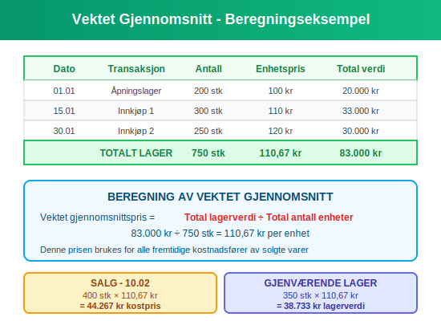
Seksjon 3: Regnskapsføring av Varelager
Regnskapsføring av varelager følger grunnleggende prinsipper for aktivering og kostnadføring som sikrer korrekt timing og verdimåling av lagertransaksjoner.
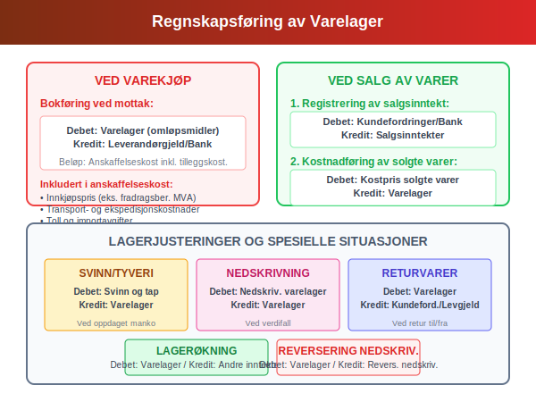
Aktivering av Varekjøp
Ved mottak av varer aktiveres lagerverdien basert på totale anskaffelseskostnader:
Debet: Varelager (omløpsmidler)
Kredit: Leverandørgjeld/Bank
Anskaffelseskost inkluderer:
- Innkjøpspris (eksklusive fradragsberettiget MVA)
- Transportkostnader
- Toll og importavgifter
- Andre direkte henførbare kostnader
Kostnadføring ved Salg
Ved salg av varer må to parallelle bokføringer utføres:
- Registrering av salgsinntekt:
Debet: Kundefordringer/Bank
Kredit: Salgsinntekter
- Kostnadføring av solgte varer:
Debet: Kostpris solgte varer (kostnad)
Kredit: Varelager (omløpsmidler)
Lagerendringer og Justeringer
Periodisk Lagerjustering
Ved avstemming og tellinger:
Lagerøkning (oppdaget merkvare):
Debet: Varelager
Kredit: Andre inntekter/Justering lagerbeholdning
Lagerreduksjon (svinn/tyveri):
Debet: Svinn og tap (kostnad)
Kredit: Varelager
Nedskrivning av Lagerverdi
Ved verdifall under anskaffelseskost:
Debet: Nedskrivning varelager (kostnad)
Kredit: Varelager
Reversering av Nedskrivning
Ved senere verdioppgang:
Debet: Varelager
Kredit: Reversering nedskrivning (inntekt)
Behandling av Returvarer
Vareretur fra Kunder
Ved mottak av returnerte varer:
Debet: Varelager (estimert lagerverdi)
Debet: Salgskostnader (reduksjon i salgsinntekt)
Kredit: Kundefordringer
Vareretur til Leverandører
Ved retur av defekte/feil varer:
Debet: Leverandørgjeld/Bank
Kredit: Varelager
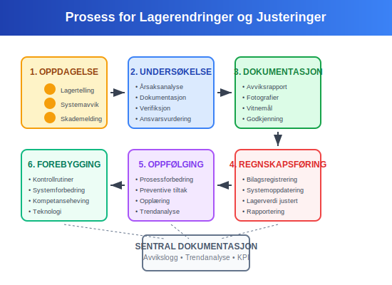
Seksjon 4: Lagerstyring og Operasjonelle Aspekter
Effektiv lagerstyring optimaliserer balansen mellom tilgjengelighet og kapitalbinding, reduserer totale lagerkostnader og forbedrer kundeservice. Modern lagerstyring integrerer prognostisering, automatisering og dataanalyse for å optimalisere lageroperasjoner.
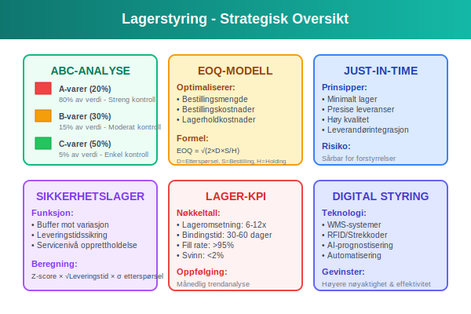
Lagerstyringsmetoder
ABC-analyse
ABC-klassifikasjon prioriterer varer basert på verdi og viktighet:
| Kategori | Andel av varer | Andel av verdi | Styringsfokus |
|---|---|---|---|
| A-varer | 20% | 80% | Streng kontroll, hyppig oppfølging |
| B-varer | 30% | 15% | Moderat kontroll, periodisk gjennomgang |
| C-varer | 50% | 5% | Enkel kontroll, bulkbestillinger |
Economic Order Quantity (EOQ)
EOQ-modellen optimaliserer bestillingsmengde ved å balansere:
- Bestillingskostnader: Faste kostnader per bestilling
- Lagerholdkostnader: Variable kostnader for å holde lager
- Etterspørselsmønstre: Årlig forbruk og variabilitet
EOQ-formel: EOQ = √(2 × Årlig etterspørsel × Bestillingskostnad ÷ Årlig lagerholdkostnad per enhet)
Just-in-Time (JIT)
JIT-filosofi minimaliserer lagerbeholdning gjennom:
- Presise leveransetidspunkter
- Høy leverandørpålitelighet
- Korte produksjonssykler
- Eliminering av unødvendig lager
Sikkerhetslager og Servicenivå
Beregning av Sikkerhetslager
Sikkerhetslager beskytter mot:
- Variasjon i etterspørsel
- Leveringstidsuforutsigbarhet
- Sesongmessige svingninger
- Leverandørforstyrrelser
Sikkerhetslager = Z-score × √(Leveringstid) × Standardavvik i etterspørsel
Servicenivå-optimalisering
| Servicenivå | Z-score | Sannsynlighet for manko | Sikkerhetslager-multiplikator |
|---|---|---|---|
| 95% | 1,65 | 5% | Moderat |
| 97,5% | 1,96 | 2,5% | Høy |
| 99% | 2,33 | 1% | Svært høy |
| 99,9% | 3,09 | 0,1% | Ekstrem |
Lageromsetning og Nøkkeltall
Lageromsetningsberegning
Lageromsetning = Kostpris solgte varer ÷ Gjennomsnittlig lagerverdi
Eksempel:
- Kostpris solgte varer: 1.200.000 kr
- Gjennomsnittlig lagerverdi: 200.000 kr
- Lageromsetning: 6 ganger per år
Lagerbindingstid
Lagerbindingstid = 365 dager ÷ Lageromsetning
Fra eksemplet over: Lagerbindingstid = 365 ÷ 6 = 61 dager
Kritiske Lager-KPIer
| KPI | Beregning | Målsetting | Betydning |
|---|---|---|---|
| Lageromsetning | Kostpris ÷ Gj.snitt lager | 6-12 ganger | Effektivitet |
| Lagerbindingstid | 365 ÷ Omsetning | 30-60 dager | Kapitaleffektivitet |
| Fyllingsgrad | Lagernivå ÷ Makskapasitet | 75-85% | Kapasitetsutnyttelse |
| Svinnprosent | Svinn ÷ Innkjøpsverdi | <2% | Kvalitetskontroll |
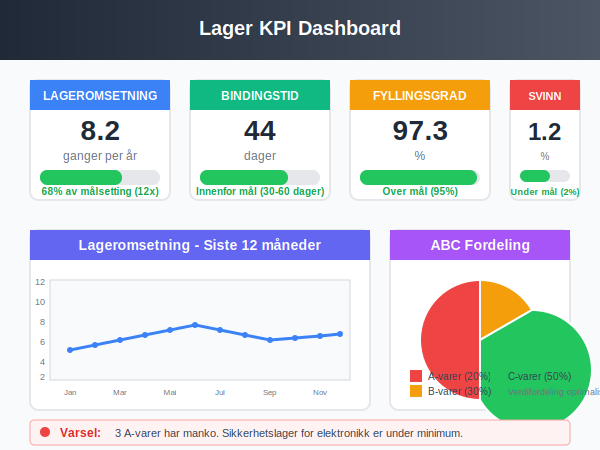
Seksjon 5: Digitale Verktøy og Automatisering
Moderne lagerforvaltning utnytter avansert teknologi for å optimalisere operasjoner, redusere kostnader og forbedre nøyaktighet. Integration med ERP-systemer og automatiserte lagersystemer transformerer tradisjonell lagerstyring.
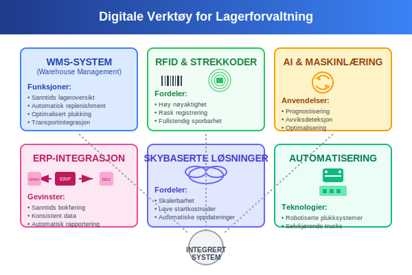
Lagerstyringssystemer (WMS)
Warehouse Management System Funktionalitet
Moderne WMS-systemer tilbyr:
- Sanntids lageroversikt med presise lagernivåer
- Automatisk replenishment basert på forhåndsdefinerte grenser
- Optimalisering av lagerplassering for effektiv plukking
- Integration med transportlogistikk for sømløs levering
Barcode og RFID-teknologi
Strekkode-systemer forbedrer:
- Nøyaktighet ved vareregistrering
- Hastighet på inn- og utleveringer
- Sporbarhet av individuelle produkter
- Reduksjon av manuelle feil
RFID-teknologi gir:
- Automatisk identifikasjon uten manuell skanning
- Sanntids lokalisering av varer i lageret
- Batch-registrering av flere produkter samtidig
- Forbedret sikkerhet og tyveribeskyttelse
Prognostisering og Planlegging
AI-drevet Etterspørselsprognose
Maskinlæringsmodeller analyserer:
- Historiske salgsmønstre
- Sesongmessige variasjoner
- Markedstrender og eksterne faktorer
- Kundeadferdsmønstre
Dynamisk Prognosemodeller
Avanserte algoritmer justerer prognoser basert på:
- Sanntids salgsdata
- Værforhold og sesongeffekter
- Markedsføringsaktiviteter
- Konkurrentanalyse
Automatisering av Lagerprosesser
Robotisering og Automation
Automatiserte lagerløsninger:
- Automatiske lagerkaruseller for høyfrekvent plukking
- Robotiserte plukksystemer for effektiv ordrebehandling
- Selvkjørende trucks for transport i lageret
- Sorteringsanlegg for automatisk pakking og frakt
Integration med Regnskapssystemer
Sanntids integration sikrer:
- Automatisk bokføring av lagertransaksjoner
- Sanntids oppdatering av lagerverdier
- Automatisk kostprisberegning
- Konsistent rapportering på tvers av systemer

Seksjon 6: Internkontroll og Risikostyring
Effektiv internkontroll av varelager beskytter mot svinn, tyveri og feil som kan påvirke både balanseverdier og løpende resultater. Systematiske kontrollrutiner og risikoreduserende tiltak er essensielle for å sikre integritet i lageroperasjoner.
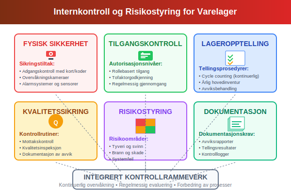
Lageropptelling og Fysisk Kontroll
Permanent Inventur (Cycle Counting)
Kontinuerlig opptelling gjennom:
- Roterende tellingsplaner for ulike varekategorier
- Høyere frekvens for A-varer (månedlig)
- Moderat frekvens for B-varer (kvartalsvis)
- Lavere frekvens for C-varer (halvårlig)
Årlig Hovedinventur
Komplett lagertelling inkluderer:
- Forberedelse: Stopp av alle lagerbevegelser
- Gjennomføring: Systematisk telling av alle varer
- Dokumentasjon: Registrering av avvik og årsaker
- Oppfølging: Korrigering av systemer og rutiner
Avviksbehandling
Ved identifiserte avvik:
| Avvikstype | Sannsynlig årsak | Oppfølgingstiltak |
|---|---|---|
| Manko | Tyveri, svinn, feil | Forsterket sikkerhet, prosessforbedring |
| Overskudd | Registreringsfeil | Gjennomgang av mottaksprosedyrer |
| Kvalitetsavvik | Forringelse, skade | Forbedret lagring og håndtering |
| Lokalisering | Feilplassering | Oppdatering av lagersystem |
Sikkerhetstiltak og Adgangskontroll
Fysisk Sikkerhet
Sikring av lagerfasilitet:
- Adgangskontroll: Elektroniske kort og sikkerhetskoder
- Overvåkningssystemer: Kameraer og alarmsystemer
- Sikkerhetssoner: Separate områder for høyverdivarer
- Brannsikkerhet: Automatiske sprinkleranlegg og røykdeteksjon
Personellkontroll
Rutiner for ansatte:
- Autorisasjonsnivåer: Rollebasert tilgang til lagersystemer
- To-faktorgodkjenning: For kritiske lagertransaksjoner
- Regelmessige bakgrunnssjekker for lagerpersonell
- Rotasjon av ansvarsområder for å redusere muligheter for misligheter
Kvalitetssikring og Prosedyrer
Standardiserte Mottaksprosedyrer
Ved mottak av varer:
- Kvantitetskontroll: Telling mot følgeseddel
- Kvalitetsinspeksjon: Visuell og teknisk kontroll
- Dokumentasjon: Registrering av eventuelle avvik
- Systemoppdatering: Umiddelbar registrering i lagersystem
Behandling av Defekte Varer
Prosess for håndtering av kvalitetsavvik:
- Isolering: Fysisk separasjon av defekte varer
- Dokumentasjon: Detaljert beskrivelse av problemer
- Leverandørnotifikasjon: Umiddelbar varsling ved leverandørfeil
- Beslutning: Retur, reparasjon eller avhending
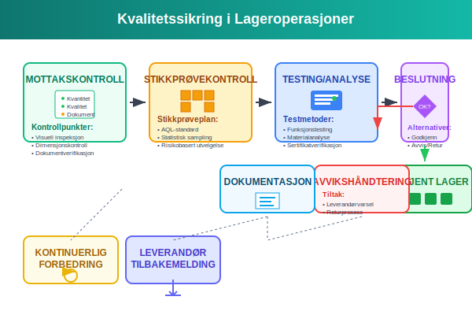
Seksjon 7: Skattemessige Forhold
Skattemessig behandling av varelager følger spesifikke regler som kan avvike fra regnskapsmessige prinsipper. Norske skattemyndigheter har detaljerte bestemmelser for verdivurdering, kostnadselementer og periodisering som påvirker beregning av skattepliktig inntekt.
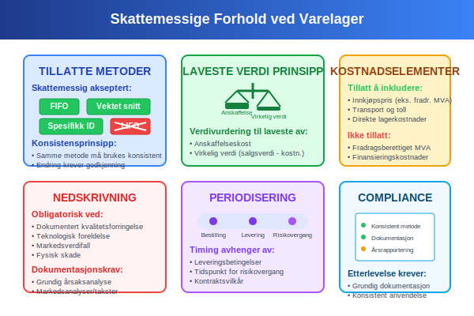
Tillatte Verdivurderingsmetoder
Skattemessig Aksepterte Metoder
Norske skattemyndigheter aksepterer:
- FIFO-metoden (First In, First Out)
- Vektet gjennomsnitt over kalenderåret
- Spesifikk identifikasjon for unike eller høyverdige varer
LIFO-metoden er ikke tillatt skattemessig i Norge.
Konsistensprinsippet
- Anvendelse over tid: Valgt metode må benyttes konsistent
- Metodeskifte: Krever forhåndsgodkjenning fra skattemyndighetene
- Dokumentasjon: Grundig begrunnelse ved endring av metode
Kostnadselementer og Delavgrensninger
Tillatte Kostnadselementer
I den skattemessige lagerverdien kan inkluderes:
- Direkte innkjøpspris (eksklusive fradragsberettiget MVA)
- Transport- og ekspedisjonskostnader
- Toll og importavgifter
- Direkte henførbare produksjonskostnader
- Nødvendige ferdigstillelseskostnader
Ikke-Tillatte Kostnadselementer
Følgende kostnader kan ikke inkluderes skattemessig:
- Fradragsberettiget merverdiavgift
- Finansieringskostnader (med visse unntak)
- Ikke-henførbare indirekte kostnader
- Unødvendige lagerkostnader
Laveste Verdi Prinsippet
Obligatorisk Nedskrivning
Skattemessig påkrevd nedskrivning når:
- Markedsverdi er lavere enn anskaffelseskost
- Varer er teknologisk foreldet
- Fysisk kvalitetsforringelse har skjedd
- Dokumentert verdifall er påvist
Dokumentasjonskrav for Nedskrivning
Tilstrekkelig dokumentasjon inkluderer:
- Markedsanalyser: Prisutvikling og markedstrends
- Tekniske rapporter: Dokumentasjon av foreldelse
- Fysisk inspeksjon: Fotodokumentasjon av skader
- Tredjepartsverdsettelse: Uavhengige takstrapporter
Periodisering og Regnskapsårsgrenser
Leveringskriterier
Skattemessig timing av lagerføring:
- Risikovergang: Når kontrollen over varene overdras
- Fysisk mottak: Faktisk levering til bedriftens lokaler
- Eiendomsrett: Juridisk eierskap til varene
Varer i Transit
Behandling ved årsskifte:
- FOB shipping point: Lagerføres ved framsending
- FOB destination: Lagerføres ved mottak
- Kontraktuelle vilkår: Avgjørende for timing
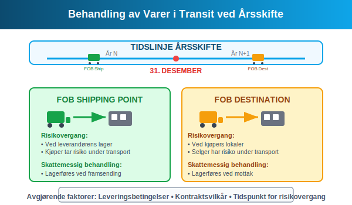
Seksjon 8: Bransjespecifikke Utfordringer
Ulike bransjer har spesielle krav og utfordringer knyttet til lagerforvaltning. Forståelse av bransjespecifikke faktorer er kritisk for optimal lagerstyring og overholdelse av relevante reguleringer.
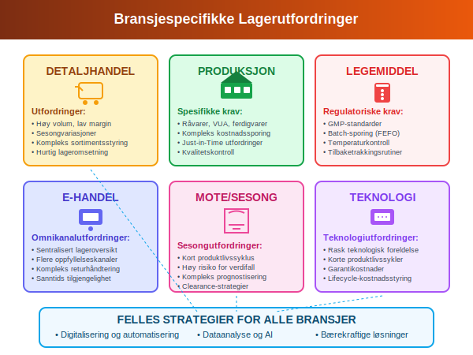
Detaljhandel og E-handel
Omnikanalutfordringer
Modern detaljhandel krever:
- Sentralisert lageroversikt på tvers av kanaler
- Sanntids tilgjengelighet for online og fysiske butikker
- Fleksibel oppfyllelse fra flere lagerlokasjoner
- Sømløs returhåndtering mellom kanaler
Sesongvariasjoner
Sesongbasert lagerstyring:
- Prognostisering: Avanserte modeller for sesongetterspørsel
- Kapasitetsplanlegging: Fleksible lagerløsninger
- Clearance-strategier: Effektiv avvikling av sesongvarer
- Kontantstrømstyring: Timing av store sesonginnkjøp
Produksjonsindustri
Kompleks Kostnadssporing
Produksjonslager krever:
- Råvare-sporing: Fra mottak til ferdig produkt
- Work-in-Progress verdsettelse: Akkumulerte kostnader
- Bi-produkthåndtering: Verdivurdering av sekundære produkter
- Kvalitetskostnader: Integration av kontroll- og testingskostnader
Just-in-Time Utfordringer
JIT-implementering innebærer:
- Leverandørintegrasjon: Tett samarbeid og kommunikasjon
- Kvalitetssikring: Høye krav til leverandørqualitet
- Risikostyring: Buffer mot leveranseforstyrrelser
- Teknologiintegrasjon: Automatiserte bestillings- og levering
Legemiddel og Helsevesen
Regulatoriske Krav
Farmasøytisk lagerstyring følger:
- GMP-standarder: Good Manufacturing Practice
- Batch-sporing: Komplett sporbarhet fra produksjon til pasient
- Holdbarhetsstyring: FEFO (First Expired, First Out) prinsipp
- Temperaturkontroll: Overvåkning av kjølekjede
Serienummersporing
Kritisk for legemidler:
- Batch-registrering: Detaljert loggføring av alle bevegelser
- Recall-readiness: Rask tilbaketrekking ved kvalitetsproblemer
- Compliance-rapportering: Dokumentasjon for myndighetene
- Utløpsdatostyring: Automatisk rotasjon basert på holdbarhet
Import og Grossisthandel
Internasjonale Leverandørkjeder
Kompleksiteter ved import:
- Valutarisiko: Svingninger i valutakurser
- Transporttid: Lange leveringstider og prognostiseringsutfordringer
- Tollbehandling: Komplekse prosedyrer og dokumentasjon
- Kulturelle faktorer: Ulike forretningspraksiser og kommunikasjonsutfordringer
Volumbasert Effektivitet
Grossistoperasjoner optimaliseres gjennom:
- Bulkinnkjøp: Forhandling av volumrabatter
- Cross-docking: Direkte overføring fra innleverandør til kunde
- Konsolidering: Sammenstilling av mindre leveranser
- Transportoptimalisering: Effektiv lastplanlegging
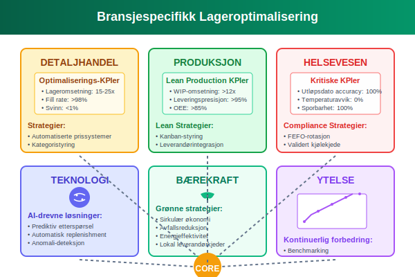
Seksjon 9: Lageranalyse og Nøkkeltall
Systematisk analyse av lagerprestasjon gjennom relevante nøkkeltall gir ledelsen innsikt i operasjonell effektivitet, kapitalutnyttelse og forbedringspotensial. Moderne lageranalyse kombinerer finansielle og operasjonelle målinger for helhetlig prestasjonsovervåkning.
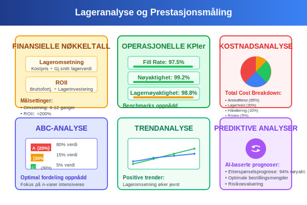
Finansielle Nøkkeltall
Lageromsetning og Kapitaleffektivitet
Lageromsetningsratio = Kostpris solgte varer ÷ Gjennomsnittlig lagerverdi
Bransjesammenligninger:
| Bransje | Typisk omsetning | Lagerbindingstid | Karakteristikk |
|---|---|---|---|
| Dagligvare | 15-25 ganger | 15-25 dager | Høy omsetning, ferskvarer |
| Mote/Tekstil | 4-8 ganger | 45-90 dager | Sesongpåvirkning |
| Møbler | 3-6 ganger | 60-120 dager | Stor fysisk størrelse |
| Elektronikk | 8-15 ganger | 25-45 dager | Rask teknologiutvikling |
| Bilreservedeler | 2-4 ganger | 90-180 dager | Lang holdbarhet |
Return on Inventory Investment (ROII)
ROII = Bruttofortjeneste fra lager ÷ Gjennomsnittlig lagerinvestering
Beregningseksempel:
- Bruttofortjeneste: 2.400.000 kr
- Gjennomsnittlig lagerverdi: 800.000 kr
- ROII: 300% (tre ganger investeringen)
Operasjonelle Effektivitetsmål
Lagerprestasjons-KPIer
| KPI | Formel | Målsetting | Frekvens |
|---|---|---|---|
| Fill Rate | Leverte ordrer ÷ Totale ordrer | >95% | Daglig |
| Order Accuracy | Korrekte forsendelser ÷ Totale | >99% | Daglig |
| Inventory Accuracy | Systembalanse ÷ Fysisk beholdning | >99,5% | Månedlig |
| Carrying Cost | Lagerkostnader ÷ Gjennomsnittslager | 20-25% | Årlig |
ABC-analyse Resultater
Verdifordeling og styringsfokus:
| Kategori | Verdandel | Produktandel | Kontrollfrekvens | Servicenivå |
|---|---|---|---|---|
| A-produkter | 70-80% | 10-20% | Daglig | 98-99% |
| B-produkter | 15-25% | 20-30% | Ukentlig | 95-98% |
| C-produkter | 5-10% | 50-70% | Månedlig | 90-95% |
Kostnad og Lønnsomhetsanalyse
Total Cost of Ownership (TCO)
Samlede lagerkostnader omfatter:
- Anskaffelseskost: Innkjøpspris og direkte kostnader
- Lagerholdkostnader: Lagerleie, forsikring, kapitalkost
- Håndteringskostnader: Mottak, plukking, pakking
- Risikokostnader: Svinn, foreldelse, tyveri
- Systemkostnader: IT-systemer og vedlikehold
Activity-Based Costing for Lager
Kostnadsfordeling basert på aktiviteter:
| Aktivitet | Kostnaddriver | Kostnad per enhet | Total kostnad |
|---|---|---|---|
| Mottak | Antall leveranser | 450 kr/leveranse | 234.000 kr |
| Lagring | Lagerdager × volum | 2,5 kr/m³/dag | 456.750 kr |
| Plukking | Antall plukk | 15 kr/plukk | 189.000 kr |
| Forsendelse | Antall sendinger | 85 kr/sending | 297.500 kr |
Prediktive Analyser og Prognoser
Etterspørselsprognostisering
Avanserte prognosemetoder:
- Trendanalyse: Historisk utvikling og fremtidige mønstre
- Sesongmodeller: Systematiske svingninger over året
- Regression: Sammenheng mellom ulike variabler
- Machine Learning: Automatisk mønstergjenkjenning
Lageroptimalisering
Dynamisk optimalisering av:
- Bestillingsfrekvens: Optimal timing av leveranser
- Lagernivåer: Balanse mellom tilgjengelighet og kostnad
- Sikkerhetslager: Risikobasert buffersetting
- Leverandørmiksing: Optimale leverandørkombinasjoner
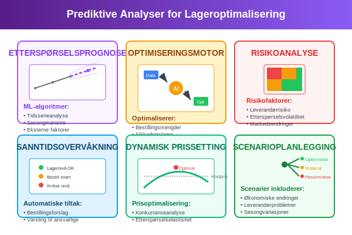
Seksjon 10: Fremtidens Lagerforvaltning
Lagerforvaltning er i rask utvikling drevet av teknologiske fremskritt, endrede forbrukeratferd og økt fokus på bærekraft. Forståelse av fremtidige trender og teknologier er kritisk for å forberede organisasjoner på kommende utfordringer og muligheter.
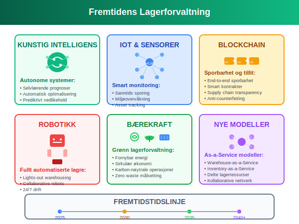
Teknologiske Trender
Kunstig Intelligens og Maskinlæring
AI-drevne lagersystemer:
- Autonomous Demand Planning: Selvlærende prognosesystemer
- Intelligent Replenishment: Automatisk bestillingsoptimalisering
- Predictive Maintenance: Forebygging av systemnedetid
- Dynamic Pricing: Sanntids prisen optimalisering basert på lager
Internet of Things (IoT) og Sensorer
Smart lagerteknologi:
- Connected Inventory: Sanntids tracking av alle produkter
- Environmental Monitoring: Temperatur, fuktighet og luftkvalitet
- Asset Tracking: Lokalisering av utstyr og mennesker
- Predictive Analytics: Forutsi problemer før de oppstår
Blockchain og Sporbarhet
Blockchain-basert lagerstyring:
- End-to-End Traceability: Komplett sporbarhet fra produsent til forbruker
- Smart Contracts: Automatiske transaksjoner ved oppfylte betingelser
- Supply Chain Transparency: Økt åpenhet i leverandørkjeden
- Counterfeit Prevention: Beskyttelse mot forfalskede produkter
Automatisering og Robotikk
Fullt Automatiserte Lagre
Lights-Out Warehousing:
- Automated Storage and Retrieval Systems (AS/RS): Robotiserte lagersystemer
- Autonomous Mobile Robots (AMRs): Selvkjørende lagerroboter
- Automated Guided Vehicles (AGVs): Programmerte transportroboter
- Robotic Picking Systems: Automatisk plukking og pakking
Collaborative Robotics
Cobots i lagermiljø:
- Human-Robot Collaboration: Samarbeid mellom mennesker og roboter
- Flexible Automation: Tilpasningsdyktige automatiseringsløsninger
- Safety Integration: Integrerte sikkerhetssystemer
- Easy Programming: Brukervennlig robotprogrammering
Bærekraftig Lagerforvaltning
Grønn Logistikk
Miljøfokusert lagerdrift:
- Carbon Footprint Reduction: Reduksjon av klimagassutslipp
- Renewable Energy: Solceller og andre fornybare energikilder
- Waste Reduction: Minimalisering av emballasje og avfall
- Circular Economy: Gjenbruk og resirkulering av materialer
Social Impact
Samfunnsansvarlig lagerdrift:
- Sustainable Sourcing: Etisk innkjøp og leverandørvalg
- Worker Welfare: Forbedrede arbeidsforhold og sikkerhet
- Community Engagement: Lokalt samfunnsengasjement
- Transparency Reporting: Åpen rapportering om bærekraft
Nye Forretningsmodeller
As-a-Service Løsninger
Tjenestifisering av lager:
- Warehousing-as-a-Service: Outsourcet lagerforvaltning
- Inventory-as-a-Service: Leverandøreid lager hos kunde
- Analytics-as-a-Service: Skybaserte analysetjenester
- Fulfillment-as-a-Service: Komplett ordrebehandling
Delte Lagerressurser
Kollaborativ lagerbruk:
- Shared Warehousing: Flere bedrifter deler lagerfasiliteter
- Cross-Docking Networks: Felles transportknutepunkter
- Collaborative Planning: Delt planlegging og prognostisering
- Risk Pooling: Redusert risiko gjennom samarbeid
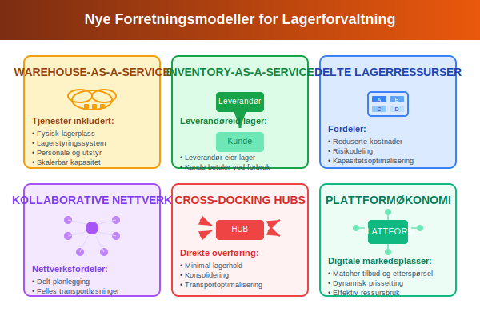
Konklusjon
Varelager representerer en av de mest kritiske eiendelene for mange bedrifter og krever sofistikert styring for å optimalisere både operasjonell effektivitet og finansiell prestasjon. Fra grunnleggende klassifikasjon og verdivurdering til avanserte digitale løsninger og fremtidige teknologier, må moderne lagerforvaltning integrere ulike perspektiver for å levere optimal verdi.
Korrekt regnskapsføring og verdivurdering av varelager sikrer not bare overholdelse av regnskapsmessige og skattemessige krav, men gir også fundamentet for informerte forretningsbeslutninger. Valg av verdivurderingsmetode, systematisk kostnadsstyring og nøyaktig periodisering påvirker direkte bedriftens rapporterte lønnsomhet og finansielle stilling.
Moderne lagerstyring går langt utover tradisjonell telleing og registrering. Integration av kunstig intelligens, automatisering og dataanalyse transformerer lageroperasjoner til strategiske konkurransefortrinn. Bedrifter som mestrer denne transformasjonen vil oppnå betydelige fordeler innen kostnadskontroll, kundeservice og kapitaleffektivitet.
Effektiv internkontroll og risikostyring beskytter lagerverdier mot svinn, tyveri og operasjonelle feil. Systematiske kontrollrutiner, avanserte sikkerhetssystemer og robuste prosedyrer reduserer risiko og sikrer integritet i lageroperasjoner.
For bedrifter som ønsker å optimalisere sin lagerforvaltning, anbefales det å:
- Implementere moderne lagerstyringssystemer som gir sanntids oversikt og automatisert kontroll
- Etablere systematiske prosedyrer for lagertelling, kvalitetskontroll og avviksbehandling
- Investere i teknologi som forbedrer nøyaktighet og reduserer manuelle prosesser
- Utvikle prediktive analysekapabiliteter for optimalisert planlegging og prognostisering
- Fokusere på bærekraftige praksis som reduserer miljøpåvirkning og støtter sosialæt ansvar
Fremtidens lagerforvaltning vil være karakteriseret av økt automatisering, intelligente systemer og bærekraftige praksis. Bedrifter som forbereder seg på denne utviklingen, og investerer i relevant teknologi og kompetanse, vil være best posisjonert for å dra nytte av de mulighetene som nye teknologier og forretningsmodeller bringer.
Varelager er ikke lenger bare en kostnadspost som skal minimaliseres, men en strategisk ressurs som kan optimaliseres for å skape verdi på tvers av hele verdikjeden. Med riktig tilnærming kan lagerforvaltning transformeres fra en operasjonell nødvendighet til en kilde til varig konkurransefortrinn.
For å sikre at regnskapet gjenspeiler korrekt lagerbeholdning, utføres regelmessig varetelling, som beskrives i detalj i denne artikkelen.